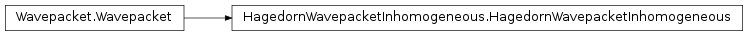

The WaveBlocks Project
@author: R. Bourquin @copyright: Copyright (C) 2010, 2011, 2012 R. Bourquin @license: Modified BSD License

This class represents inhomogeneous vector valued wavepackets $Ket{Psi}$.
The coefficients $c^i$ of the linear combination for each component $Phi_i$.
| param nodes: | The nodes $gamma$ at which the Hagedorn wavepacket gets evaluated. |
|---|
@keyword component: The index $i$ of a single component $Phi_i$ to evaluate. (Defaults to ‘None’ for evaluating all components.) @keyword prefactor: Whether to include a factor of $left(detofs{Q_i}
ight)^{- rac{1}{2}}$.
return: A list of arrays or a single array containing the values of the $Phi_i$ at the nodes $gamma$.
| param nodes: | The nodes $gamma$ at which the Hagedorn functions are evaluated. |
|---|---|
| param component: | |
| The index $i$ of the component whose basis functions $phi^i_k$ we want to evaluate. | |
@keyword prefactor: Whether to include a factor of $left(detofs{Q_i}
ight)^{- rac{1}{2}}$.
return: Returns a twodimensional array $H$ where the entry $H[k,i]$ is the value of the $k$-th Hagedorn function evaluated at the node $i$.
Generate an (unique) ID per wavepacket instance.
| Returns: | The size of the basis, i.e. the number $K$ of ${phi_k}_{k=1}^K$. |
|---|
| Returns: | The coefficients $c^i$ of all components $Phi_i$ as a single long column vector. |
|---|
Returns the coefficients $c^i$ for some components $Phi_i$ of $Ket{Psi}$. @keyword component: The index $i$ of the coefficients $c^i$ we want to get. :return: The coefficients $c^i$ either for all components $Phi_i$ or for a specified one.
Return the packet ID of this wavepacket instance. The ID may be used for storing packets in associative lists.
Calculate the $L^2$ norm of the wavepacket $Ket{Psi}$. @keyword component: The component $Phi_i$ of which the norm is calculated. @keyword summed: Whether to sum up the norms of the individual components $Phi_i$. :return: A list containing the norms of all components $Phi_i$ or the overall norm of $Psi$.
| Returns: | The number $N$ of components the wavepacket $Psi$ has. |
|---|
Get the Hagedorn parameters $Pi_i$ of each component $Phi_i$ of the wavepacket $Psi$. @keyword component: The index $i$ of the component whose parameters $Pi_i$ we want to get. @keyword aslist: Dummy parameter for API compatibility with the homogeneous packets. :return: A list with all the sets $Pi_i$ or a single set.
Return the I{InhomogeneousQuadrature} instance used for evaluating brakets. :return: The current instance I{InhomogeneousQuadrature}.
Calculate the effect of $-i epsilon^2 rac{partial}{partial x}$
on a component $Phi_i$ of the Hagedorn wavepacket $Psi$. @keyword component: The index $i$ of the component $Phi_i$ on which we apply the above operator. :return: The modified coefficients.
Calculate the kinetic energy $Braket{Psi|T|Psi}$ of the wavepacket componentwise. @keyword summed: Wheter to sum up the individual integrals $Braket{Phi_i|T_{i,j}|Phi_j}$. :return: The kinetic energy of the wavepacket’s components $Phi_i$ or the overall kinetic energy of $Psi$.
Number of components $Phi_i$ the wavepacket $Ket{Psi}$ has got.
Data structure that contains the Hagedorn parameter sets $Pi_i$ of each component $Phi_i$. The parameter values are initialized to the Harmonic Oscillator Eigenfunctions
Calculate the potential energy $Braket{Psi|V|Psi}$ of the wavepacket componentwise. :param potential: The potential energy operator $V$ as function. @keyword summed: Wheter to sum up the individual integrals $Braket{Phi_i|V_{i,j}|Phi_j}$. :return: The potential energy of the wavepacket’s components $Phi_i$ or the overall potential energy of $Psi$.
Project the Hagedorn wavepacket into the canonical basis. :param potential: The potential $V$ whose eigenvectors $nu_l$ are used for the transformation. @note: This function is expensive and destructive! It modifies the coefficients of the I{self} instance.
Project the Hagedorn wavepacket into the eigenbasis of a given potential $V$. :param potential: The potential $V$ whose eigenvectors $nu_l$ are used for the transformation. @note: This function is expensive and destructive! It modifies the coefficients of the I{self} instance.
An object that can compute brakets via quadrature.
Set the size of the basis of a given component or all components. :param basis_size: An single positive integer or a list of $N$ positive integers. @keyword component: The component for which we want to set the basis size. Default is I{None} which means ‘all’.
Set a single coefficient $c^i_k$ of the specified component $Phi_i$ of $Ket{Psi}$. :param component: The index $i$ of the component $Phi_i$ we want to update. :param index: The index $k$ of the coefficient $c^i_k$ we want to update. :param value: The new value of the coefficient $c^i_k$. @raise ValueError: For invalid indices $i$ or $k$.
Set the coefficients for all components $Phi_i$ simultaneously. :param vector: The coefficients of all components as a single long column vector. @note: This function does NOT copy the input data! This is for efficiency as this routine is used in the innermost loops.
Update the coefficients $c$ of $Psi$. :param values: The new values of the coefficients $c^i$ of $Phi_i$. :param component: The index $i$ of the component we want to update with new coefficients. @note: This function can either set new coefficients for a single component $Phi_i$ only if the I{component} attribute is set or for all components simultaneously if I{values} is a list of arrays. @raise ValueError: For invalid indices $i$.
Manually set an ID for the current wavepacket instance.
Set the Hagedorn parameters $Pi_i$ of each component $Phi_i$ of the wavepacket $Psi$. :param parameters: A list or a single set of Hagedorn parameters. @keyword component: The index $i$ of the component whose parameters $Pi_i$ we want to update.
Set the I{InhomogeneousQuadrature} instance used for evaluating brakets. :param quadrature: The new I{InhomogeneousQuadrature} instance. May be I{None} to use a dafault one with a quadrature rule of order $K+4$.
Transform the wavepacket to Fourier space. @keyword assign: Whether to assign the transformation to this packet or return a cloned packet. @note: This is the inverse of the method I{to_real_space()}.
Transform the wavepacket to real space. @keyword assign: Whether to assign the transformation to this packet or return a cloned packet. @note: This is the inverse of the method I{to_fourier_space()}.